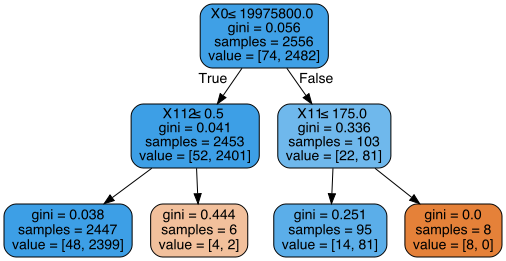

Coefficient
0 -0.016793
1 0.006107
In [294]: y_pred = regress.predict(X_test) # Make predictions using this model
Traceback (most recent call last):
File "<ipython-input-294-d1aa2d94436a>", line 1, in <module>
y_pred = regress.predict(X_test) # Make predictions using this model
File "/Users/imyyounge/anaconda3/lib/python3.7/site-packages/sklearn/linear_model/base.py", line 221, in predict
return self._decision_function(X)
File "/Users/imyyounge/anaconda3/lib/python3.7/site-packages/sklearn/linear_model/base.py", line 206, in _decision_function
dense_output=True) + self.intercept_
File "/Users/imyyounge/anaconda3/lib/python3.7/site-packages/sklearn/utils/extmath.py", line 142, in safe_sparse_dot
return np.dot(a, b)
ValueError: shapes (1096,123) and (2,) not aligned: 123 (dim 1) != 2 (dim 0)
In [295]:
In [295]: reg_output = pd.DataFrame({'Actual': y_test, 'Predicted': y_pred})
In [296]: print(reg_output.head(15))
Actual Predicted
957 11176.0 11053.033572
3354 12641.0 8548.384258
1809 2947.0 7758.087137
341 4884.0 7707.492196
280 13588.0 13948.879217
1205 13188.0 10892.480276
270 10986.0 10023.152095
3325 3220.0 3688.533467
91 10844.0 9768.908268
18 10699.0 8894.445157
1938 11173.0 12456.759860
1564 10616.0 11828.583311
142 8338.0 8146.013132
71 16576.0 13007.289310
1442 7043.0 11624.699066
In [297]: y_pred = regress.predict(X_test) # Make predictions using this model
Traceback (most recent call last):
File "<ipython-input-297-d1aa2d94436a>", line 1, in <module>
y_pred = regress.predict(X_test) # Make predictions using this model
File "/Users/imyyounge/anaconda3/lib/python3.7/site-packages/sklearn/linear_model/base.py", line 221, in predict
return self._decision_function(X)
File "/Users/imyyounge/anaconda3/lib/python3.7/site-packages/sklearn/linear_model/base.py", line 206, in _decision_function
dense_output=True) + self.intercept_
File "/Users/imyyounge/anaconda3/lib/python3.7/site-packages/sklearn/utils/extmath.py", line 142, in safe_sparse_dot
return np.dot(a, b)
ValueError: shapes (1096,123) and (2,) not aligned: 123 (dim 1) != 2 (dim 0)
In [298]:
In [298]: from sklearn.tree import DecisionTreeClassifier
In [299]: from sklearn.model_selection import train_test_split
In [300]: from sklearn.metrics import accuracy_score
In [301]: final = pd.read_csv('final.csv') # Correction: Need to use the dataset outputted by categorical_and_exclusion
...: def rename_unname(df):
...: for col in df:
...: if col.startswith('Unnamed'):
...: df.drop(col,axis=1, inplace=True)
...:
...: rename_unname(final)
...: print(list(final))
...: final.drop(['left_parent_date'], axis=1, inplace=True) #Drop the columns with NAs so that hopefully things work later
...:
...: # Separate into training and test data
...: # Create a column forsize of GP practice - think about funding - small / not - should be 1 for larger surgeries
...: def f(row):
...: if row['number_of_patients'] < 3000:
...: val = 0
...: elif row['number_of_patients'] > 2999:
...: val = 1
...: else:
...: val = -1
...: return val
...:
...: final['binary_#_patients'] = final.apply(f, axis=1)
...: # Specifying the specific columns
...: y = final['binary_#_patients'] # Then going to need to make this binary
...: X = final #Says this is not defined when I try to run the later code
...: X.drop(['binary_#_patients'], axis=1, inplace = True)
...: X.drop(['number_of_patients'], axis=1, inplace = True)
...:
...: # We have set the random seed to be 2, by setting the random_state parameter.
...: from sklearn.model_selection import train_test_split
...: X_train, X_test, y_train, y_test = train_test_split(X, y, test_size=0.3, random_state=2)
...: X_train.drop(['number_of_patients']) # May already be running, need to check
...: print(list(X_train))
...: # This code doesn't work - going to just keep writing code and will come back to debug this afternoon
...: # There will be the same proportion of case-controls in the new dataset as original
...: #Scaling:
...: from sklearn.preprocessing import StandardScaler
...: scaler = StandardScaler() #Only need to scale the train, then apply to the test data
...: scaler.fit(X_train)
...: scaler.transform(X_train)
...: #print(scaler.mean_)
['date_open', 'number_of_patients', 'join_parent_date', 'left_parent_date', 'items', 'nic', 'act.cost', 'quantity', 'bnf.chapter', 'bnf.section', 'bnf.paragraph', 'ccg_code1', 'high_level_health_geography1', 'commissioner1', 'sha1', 'bnf.name1', 'e8...1', 'ABINGDON OXFORDSHIRE', 'ALENCON LINK BASINGSTOKE', 'BARLBOROUGH CHESTERFIELD', 'BEDFORDSHIRE', 'BERKSHIRE', 'BEVERLEY', 'BIRMINGHAM', 'BRADFORD', 'BRISTOL', 'BROOKLANDS MILTON KEYNES', 'BROWNHILLS', 'BUCKINGHAMSHIRE', 'CAMBRIDGESHIRE', 'CHESHIRE', 'CHESTER CHESHIRE', 'CLEVELAND', 'CO.DURHAM', 'COLCHESTER ESSEX', 'CORNWALL', 'COUNTY DURHAM', 'COVENTRY', 'CUMBRIA', 'DERBY', 'DERBYSHIRE', 'DEVIZES WILTSHIRE', 'DEVON', 'DONCASTER', 'DORSET', 'DOVER KENT', 'EAST SUSSEX', 'EAST YORKSHIRE', 'ENFIELD MIDDLESEX', 'ESSEX', 'GLOUCESTER', 'GLOUCESTERSHIRE', 'GREAT BARR BIRMINGHAM', 'HAMPSHIRE', 'HARTLEPOOL CLEVELAND', 'HEREFORDSHIRE', 'HERTFORDSHIRE', 'HUDDERSFIELD', 'HUNTINGDON CAMBRIDGESHIRE', 'ILFORD ESSEX', 'ISLE OF WIGHT', 'KENT', 'KINGSTON UPON HULL', 'LANCASHIRE', 'LEEDS', 'LEICESTERSHIRE', 'LINCOLNSHIRE', 'LIVERPOOL', 'LONDON', 'MACCLESFIELD CHESHIRE', 'MAIDSTONE KENT', 'MANCHESTER', 'MERSEYSIDE', 'MIDDLESEX', 'NORFOLK', 'NORTH EAST LINCOLNSHIRE', 'NORTH LINCOLNSHIRE', 'NORTH SOMERSET', 'NORTH YORKSHIRE', 'NORTHAMPTON', 'NORTHAMPTONSHIRE', 'NORTHUMBERLAND', 'NORWICH', 'NOTTINGHAM', 'NOTTINGHAMSHIRE', 'OXFORDSHIRE', 'PERSHORE WORCESTERSHIRE', 'PRESTON', 'ROTHERHAM', 'SHAW OLDHAM', 'SHERBURN-IN-ELMET', 'SHREWSBURY SHROPSHIRE', 'SHROPSHIRE', 'SNEINTON NOTTINGHAM', 'SOMERSET', 'SOUTH HUMBERSIDE', 'SOUTH YORKSHIRE', 'SOUTHAMPTON HAMPSHIRE', 'STAFFORDSHIRE', 'STOCKPORT CHESHIRE', 'SUFFOLK', 'SURREY', 'TYNE & WEAR', 'TYNE AND WEAR', 'UCKFIELD', 'WADEBRIDGE CORNWALL', 'WARWICKSHIRE', 'WEST BYFLEET SURREY', 'WEST MIDLANDS', 'WEST SUSSEX', 'WEST YORKSHIRE', 'WIGAN', 'WIGAN LANCASHIRE', 'WILTSHIRE', 'WIRRAL', 'WOOLSTON SOUTHAMPTON', 'WORCESTERSHIRE', 'YORK', 'Y56', 'Y58', 'Y59', 'Y60', 'Y61', 'Y62', 'Y63']
Traceback (most recent call last):
File "<ipython-input-301-550db94ebb27>", line 32, in <module>
X_train.drop(['number_of_patients']) # May already be running, need to check
File "/Users/imyyounge/anaconda3/lib/python3.7/site-packages/pandas/core/frame.py", line 3997, in drop
errors=errors,
File "/Users/imyyounge/anaconda3/lib/python3.7/site-packages/pandas/core/generic.py", line 3936, in drop
obj = obj._drop_axis(labels, axis, level=level, errors=errors)
File "/Users/imyyounge/anaconda3/lib/python3.7/site-packages/pandas/core/generic.py", line 3970, in _drop_axis
new_axis = axis.drop(labels, errors=errors)
File "/Users/imyyounge/anaconda3/lib/python3.7/site-packages/pandas/core/indexes/base.py", line 5018, in drop
raise KeyError(f"{labels[mask]} not found in axis")
KeyError: "['number_of_patients'] not found in axis"
In [302]:
In [302]: dt = DecisionTreeClassifier(max_depth=2, random_state=1, criterion='gini')
In [303]: dt_md2 = DecisionTreeClassifier(max_depth=2, random_state=1, criterion='gini')
In [304]: dt_md2.fit(X_train, y_train) #Fit dt to the training set
Out[304]:
DecisionTreeClassifier(class_weight=None, criterion='gini', max_depth=2,
max_features=None, max_leaf_nodes=None,
min_impurity_decrease=0.0, min_impurity_split=None,
min_samples_leaf=1, min_samples_split=2,
min_weight_fraction_leaf=0.0, presort=False,
random_state=1, splitter='best')
In [305]: y_pred = dt.predict(X_test) #Predict the test set labels
Traceback (most recent call last):
File "<ipython-input-305-07b5c6a067f3>", line 1, in <module>
y_pred = dt.predict(X_test) #Predict the test set labels
File "/Users/imyyounge/anaconda3/lib/python3.7/site-packages/sklearn/tree/tree.py", line 429, in predict
check_is_fitted(self, 'tree_')
File "/Users/imyyounge/anaconda3/lib/python3.7/site-packages/sklearn/utils/validation.py", line 914, in check_is_fitted
raise NotFittedError(msg % {'name': type(estimator).__name__})
NotFittedError: This DecisionTreeClassifier instance is not fitted yet. Call 'fit' with appropriate arguments before using this method.
In [306]:
In [306]: y_pred = dt_md2.predict(X_test) #Predict the test set labels
In [307]: accuracy_score(y_test, y_pred) #Evaluate tets-set accuracy
Out[307]: 0.9753649635036497
In [308]: dt_info = DecisionTreeClassifier(max_depth=2, random_state=1) #Check that defauilt is information gain
...: dt_info.fit(X_train, y_train) #Fit dt to the training set
...: y_pred = dt_info.predict(X_test) #Predict the test set labels
...: accuracy_score(y_test, y_pred)
Out[308]: 0.9753649635036497
In [309]: dt = DecisionTreeRegressor(max_depth=2, random_state=1)
Traceback (most recent call last):
File "<ipython-input-309-43ccfb1a79b1>", line 1, in <module>
dt = DecisionTreeRegressor(max_depth=2, random_state=1)
NameError: name 'DecisionTreeRegressor' is not defined
In [310]:
In [310]: from sklearn.tree import DecisionTreeRegressor
In [311]: dt = DecisionTreeRegressor(max_depth=2, random_state=1)
In [312]: mse_dt = MSE(y_test, y_pred)
Traceback (most recent call last):
File "<ipython-input-312-5f329473ffda>", line 1, in <module>
mse_dt = MSE(y_test, y_pred)
NameError: name 'MSE' is not defined
In [313]:
In [313]: from sklearn.metrics import mean_squared_error as MSE
In [314]: dt = DecisionTreeRegressor(max_depth=2, random_state=1)
In [315]: mse_dt = MSE(y_test, y_pred)
In [316]: rmse_dt = mse_dt**(1/2)
In [317]: print(rmse_dt)
0.15695552394341006
In [318]: from sklearn.tree import export_graphviz
In [319]: from sklearn import metrics
In [320]: import graphviz
In [321]: # Helper function to plot the decision tree. This uses the graphviz library.
In [322]: def plot_tree(graph, feature_names=None, class_names=None):
...: '''
...: This method takes a DecisionTreeClassifier object, along with a list of feature names and target names
...: and plots a tree. The feature names and class names can be left empty; they are just there for labelling
...: '''
...: dot_data = export_graphviz(graph, out_file=None,
...: feature_names=feature_names,
...: class_names=class_names,
...: filled=True, rounded=True,
...: special_characters=True)
...:
...: graph = graphviz.Source(dot_data)
...:
...: return graph
...:
...:
In [323]: plot_tree(dt_info, X_train, y_train)
Traceback (most recent call last):
File "<ipython-input-323-e5aed2eb3ae4>", line 1, in <module>
plot_tree(dt_info, X_train, y_train)
File "<ipython-input-322-f3810bb6e44f>", line 10, in plot_tree
special_characters=True)
File "/Users/imyyounge/anaconda3/lib/python3.7/site-packages/sklearn/tree/export.py", line 775, in export_graphviz
exporter.export(decision_tree)
File "/Users/imyyounge/anaconda3/lib/python3.7/site-packages/sklearn/tree/export.py", line 401, in export
decision_tree.n_features_))
ValueError: Length of feature_names, 2556 does not match number of features, 123
In [324]:
In [324]: plot_tree(dt_info, X_train.columns, y_train)
Traceback (most recent call last):
File "<ipython-input-324-9fa1b53ac544>", line 1, in <module>
plot_tree(dt_info, X_train.columns, y_train)
File "<ipython-input-322-f3810bb6e44f>", line 10, in plot_tree
special_characters=True)
File "/Users/imyyounge/anaconda3/lib/python3.7/site-packages/sklearn/tree/export.py", line 775, in export_graphviz
exporter.export(decision_tree)
File "/Users/imyyounge/anaconda3/lib/python3.7/site-packages/sklearn/tree/export.py", line 409, in export
criterion=decision_tree.criterion)
File "/Users/imyyounge/anaconda3/lib/python3.7/site-packages/sklearn/tree/export.py", line 469, in recurse
criterion)))
File "/Users/imyyounge/anaconda3/lib/python3.7/site-packages/sklearn/tree/export.py", line 344, in node_to_str
node_string += class_name
TypeError: can only concatenate str (not "numpy.int64") to str
In [325]:
In [325]: X_train = pd.DataFrame(X_train)
In [326]: plot_tree(dt_info, X_train.columns, y_train)
Traceback (most recent call last):
File "<ipython-input-326-9fa1b53ac544>", line 1, in <module>
plot_tree(dt_info, X_train.columns, y_train)
File "<ipython-input-322-f3810bb6e44f>", line 10, in plot_tree
special_characters=True)
File "/Users/imyyounge/anaconda3/lib/python3.7/site-packages/sklearn/tree/export.py", line 775, in export_graphviz
exporter.export(decision_tree)
File "/Users/imyyounge/anaconda3/lib/python3.7/site-packages/sklearn/tree/export.py", line 409, in export
criterion=decision_tree.criterion)
File "/Users/imyyounge/anaconda3/lib/python3.7/site-packages/sklearn/tree/export.py", line 469, in recurse
criterion)))
File "/Users/imyyounge/anaconda3/lib/python3.7/site-packages/sklearn/tree/export.py", line 344, in node_to_str
node_string += class_name
TypeError: can only concatenate str (not "numpy.int64") to str
In [327]:
In [327]: os.chdir('/Users/imyyounge/Documents/4_Masters/4_Machine_learning/Nov_2019_Prescribing_Data/Code')
...: final = pd.read_csv('final.csv') # Correction: Need to use the dataset outputted by categorical_and_exclusion
...: def rename_unname(df):
...: for col in df:
...: if col.startswith('Unnamed'):
...: df.drop(col,axis=1, inplace=True)
...:
...: rename_unname(final)
...: print(list(final))
...: final.drop(['left_parent_date'], axis=1, inplace=True) #Drop the columns with NAs so that hopefully things work later
...:
...: # Separate into training and test data
...: # Create a column forsize of GP practice - think about funding - small / not - should be 1 for larger surgeries
...: def f(row):
...: if row['number_of_patients'] < 3000:
...: val = 0
...: elif row['number_of_patients'] > 2999:
...: val = 1
...: else:
...: val = -1
...: return val
...:
...: final['binary_#_patients'] = final.apply(f, axis=1)
...: # Specifying the specific columns
...: y = final['binary_#_patients'] # Then going to need to make this binary
...: X = final #Says this is not defined when I try to run the later code
...: X.drop(['binary_#_patients'], axis=1, inplace = True)
...: X.drop(['number_of_patients'], axis=1, inplace = True)
...:
...: # We have set the random seed to be 2, by setting the random_state parameter.
...: from sklearn.model_selection import train_test_split
...: X_train, X_test, y_train, y_test = train_test_split(X, y, test_size=0.3, random_state=2)
...: X_train.drop(['number_of_patients']) # May already be running, need to check
...: print(list(X_train))
...: X_train_df = X_train
...: # This code doesn't work - going to just keep writing code and will come back to debug this afternoon
...: # There will be the same proportion of case-controls in the new dataset as original
...: #Scaling:
...: from sklearn.preprocessing import StandardScaler
...: scaler = StandardScaler() #Only need to scale the train, then apply to the test data
...: scaler.fit(X_train)
...: scaler.transform(X_train)
...: #print(scaler.mean_)
['date_open', 'number_of_patients', 'join_parent_date', 'left_parent_date', 'items', 'nic', 'act.cost', 'quantity', 'bnf.chapter', 'bnf.section', 'bnf.paragraph', 'ccg_code1', 'high_level_health_geography1', 'commissioner1', 'sha1', 'bnf.name1', 'e8...1', 'ABINGDON OXFORDSHIRE', 'ALENCON LINK BASINGSTOKE', 'BARLBOROUGH CHESTERFIELD', 'BEDFORDSHIRE', 'BERKSHIRE', 'BEVERLEY', 'BIRMINGHAM', 'BRADFORD', 'BRISTOL', 'BROOKLANDS MILTON KEYNES', 'BROWNHILLS', 'BUCKINGHAMSHIRE', 'CAMBRIDGESHIRE', 'CHESHIRE', 'CHESTER CHESHIRE', 'CLEVELAND', 'CO.DURHAM', 'COLCHESTER ESSEX', 'CORNWALL', 'COUNTY DURHAM', 'COVENTRY', 'CUMBRIA', 'DERBY', 'DERBYSHIRE', 'DEVIZES WILTSHIRE', 'DEVON', 'DONCASTER', 'DORSET', 'DOVER KENT', 'EAST SUSSEX', 'EAST YORKSHIRE', 'ENFIELD MIDDLESEX', 'ESSEX', 'GLOUCESTER', 'GLOUCESTERSHIRE', 'GREAT BARR BIRMINGHAM', 'HAMPSHIRE', 'HARTLEPOOL CLEVELAND', 'HEREFORDSHIRE', 'HERTFORDSHIRE', 'HUDDERSFIELD', 'HUNTINGDON CAMBRIDGESHIRE', 'ILFORD ESSEX', 'ISLE OF WIGHT', 'KENT', 'KINGSTON UPON HULL', 'LANCASHIRE', 'LEEDS', 'LEICESTERSHIRE', 'LINCOLNSHIRE', 'LIVERPOOL', 'LONDON', 'MACCLESFIELD CHESHIRE', 'MAIDSTONE KENT', 'MANCHESTER', 'MERSEYSIDE', 'MIDDLESEX', 'NORFOLK', 'NORTH EAST LINCOLNSHIRE', 'NORTH LINCOLNSHIRE', 'NORTH SOMERSET', 'NORTH YORKSHIRE', 'NORTHAMPTON', 'NORTHAMPTONSHIRE', 'NORTHUMBERLAND', 'NORWICH', 'NOTTINGHAM', 'NOTTINGHAMSHIRE', 'OXFORDSHIRE', 'PERSHORE WORCESTERSHIRE', 'PRESTON', 'ROTHERHAM', 'SHAW OLDHAM', 'SHERBURN-IN-ELMET', 'SHREWSBURY SHROPSHIRE', 'SHROPSHIRE', 'SNEINTON NOTTINGHAM', 'SOMERSET', 'SOUTH HUMBERSIDE', 'SOUTH YORKSHIRE', 'SOUTHAMPTON HAMPSHIRE', 'STAFFORDSHIRE', 'STOCKPORT CHESHIRE', 'SUFFOLK', 'SURREY', 'TYNE & WEAR', 'TYNE AND WEAR', 'UCKFIELD', 'WADEBRIDGE CORNWALL', 'WARWICKSHIRE', 'WEST BYFLEET SURREY', 'WEST MIDLANDS', 'WEST SUSSEX', 'WEST YORKSHIRE', 'WIGAN', 'WIGAN LANCASHIRE', 'WILTSHIRE', 'WIRRAL', 'WOOLSTON SOUTHAMPTON', 'WORCESTERSHIRE', 'YORK', 'Y56', 'Y58', 'Y59', 'Y60', 'Y61', 'Y62', 'Y63']
Traceback (most recent call last):
File "<ipython-input-327-0c15b3d11a61>", line 33, in <module>
X_train.drop(['number_of_patients']) # May already be running, need to check
File "/Users/imyyounge/anaconda3/lib/python3.7/site-packages/pandas/core/frame.py", line 3997, in drop
errors=errors,
File "/Users/imyyounge/anaconda3/lib/python3.7/site-packages/pandas/core/generic.py", line 3936, in drop
obj = obj._drop_axis(labels, axis, level=level, errors=errors)
File "/Users/imyyounge/anaconda3/lib/python3.7/site-packages/pandas/core/generic.py", line 3970, in _drop_axis
new_axis = axis.drop(labels, errors=errors)
File "/Users/imyyounge/anaconda3/lib/python3.7/site-packages/pandas/core/indexes/base.py", line 5018, in drop
raise KeyError(f"{labels[mask]} not found in axis")
KeyError: "['number_of_patients'] not found in axis"
In [328]:
In [328]: dt_md2 = DecisionTreeClassifier(max_depth=2, random_state=1, criterion='gini')
...: dt_md2.fit(X_train, y_train) #Fit dt to the training set
...: y_pred = dt_md2.predict(X_test) #Predict the test set labels
...: accuracy_score(y_test, y_pred)
Out[328]: 0.9753649635036497
In [329]: from sklearn.tree import export_graphviz
...: from sklearn import metrics
...: import graphviz
In [330]: plot_tree(dt_info, X_train_df, y_train)
Traceback (most recent call last):
File "<ipython-input-330-fd62e53b0630>", line 1, in <module>
plot_tree(dt_info, X_train_df, y_train)
NameError: name 'X_train_df' is not defined
In [331]:
In [331]: X_train_df = X_train
In [332]: plot_tree(dt_info, X_train_df, y_train)
Traceback (most recent call last):
File "<ipython-input-332-fd62e53b0630>", line 1, in <module>
plot_tree(dt_info, X_train_df, y_train)
File "<ipython-input-322-f3810bb6e44f>", line 10, in plot_tree
special_characters=True)
File "/Users/imyyounge/anaconda3/lib/python3.7/site-packages/sklearn/tree/export.py", line 775, in export_graphviz
exporter.export(decision_tree)
File "/Users/imyyounge/anaconda3/lib/python3.7/site-packages/sklearn/tree/export.py", line 401, in export
decision_tree.n_features_))
ValueError: Length of feature_names, 2556 does not match number of features, 123
In [333]:
In [333]: plot_tree(dt_info)
Out[333]:

In [334]: dt_info = DecisionTreeClassifier(max_depth=2, random_state=1) #Check that defauilt is information gain
...: dt_info.fit(X_train, y_train) #Fit dt to the training set
...: y_pred = dt_info.predict(X_test) #Predict the test set labels
...: accuracy_score(y_test, y_pred)
Out[334]: 0.9753649635036497
In [335]: dt_info.fit(X_train,_df y_train) #Fit dt to the training set
File "<ipython-input-335-aea3bbffa33c>", line 1
dt_info.fit(X_train,_df y_train) #Fit dt to the training set
^
SyntaxError: invalid syntax
In [336]:
In [336]: dt_info.fit(X_train_df, y_train) #Fit dt to the training set
Out[336]:
DecisionTreeClassifier(class_weight=None, criterion='gini', max_depth=2,
max_features=None, max_leaf_nodes=None,
min_impurity_decrease=0.0, min_impurity_split=None,
min_samples_leaf=1, min_samples_split=2,
min_weight_fraction_leaf=0.0, presort=False,
random_state=1, splitter='best')
In [337]: y_pred = dt_info.predict(X_test) #Predict the test set labels
In [338]: plot_tree(dt_info)
Out[338]:
In [339]: plot_tree(dt_md2)
Out[339]:
In [340]: from sklearn.svm import SVC # "Support vector classifier"
In [341]: def plot_svc_decision_function(model, ax=None):
...: """Plot the decision function for a 2D SVC"""
...: if ax is None:
...: ax = plt.gca()
...: xlim = ax.get_xlim()
...: ylim = ax.get_ylim()
...:
...: # create grid to evaluate model
...: x = np.linspace(xlim[0], xlim[1], 30)
...: y = np.linspace(ylim[0], ylim[1], 30)
...: X, Y = np.meshgrid(x,y)
...: xy = np.vstack([X.ravel(), Y.ravel()]).T
...: P = model.decision_function(xy).reshape(X.shape)
...:
...: # plot decision boundary and margins
...: ax.contour(X, Y, P, colors='k',
...: levels=[-1, 0, 1], alpha=0.5,
...: linestyles=['--', '-', '--'])
...:
...:
...: ax.scatter(model.support_vectors_[:, 0],
...: model.support_vectors_[:, 1],
...: s=300, linewidth=1, facecolors='none');
...: ax.set_xlim(xlim)
...: ax.set_ylim(ylim)
...:
...:
In [342]: model = SVC(kernel='linear', C=1E10, gamma = 0.1)
In [343]: model.fit(X_train, y_train)